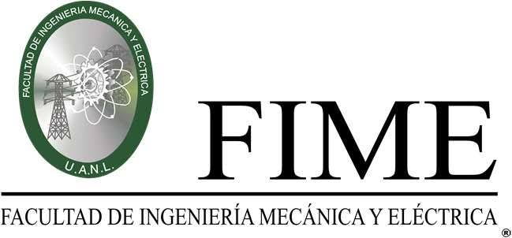

Esta página reúne cuatro becas distintas, de lo más cercano a lo más amplio: mi facultad, mi uni, una empresa y el gobierno.
De cada beca una hay información sobre quién la otorga, cuánto apoya, qué piden y cómo se solicita. La información se encuentra en las páginas oficiales y de portales de becas consultados en octubre de 2026.
Las barras comparan lo que se recibe en cada pago.
Fundación UANL$1,500 por mes
Escribiendo el Futuro$5,800 por bimestre
Santander$9,000 en un solo pago
La Beca-T no aparece porque no se paga en pesos: da un porcentaje de beca, de 25% hasta 100%.
Fechas importantes
Beca
Periodo conocido
Estado
Beca-T
Antes de iniciar el semestre
Fundación UANL
Según disponibilidad del programa
Santander
al
Escribiendo el Futuro
16 al 27 de febrero y 18 al 30 de septiembre
1er sector: Facultad
Beca-T

La Beca-T es un programa institucional de la FIME que premia a quienes llevan su carrera al corriente. A diferencia de otras becas, no da una cantidad fija en pesos: otorga un porcentaje de beca que crece conforme avanzas de semestre.
Es la más cercana a mí porque la administra mi propia facultad y depende de algo que sí puedo controlar: aprobar todas mis materias en primera oportunidad.
Apoyo
Porcentaje de beca, del 25% al 100%
Para quién
Alumnos de 5° semestre a cursar en adelante, con todas las materias del kárdex en primera oportunidad o máximo 1 extraordinario
Cómo se solicita
Por correo a fimebecat@gmail.com, con asunto "Matrícula"; en el cuerpo van nombre, matrícula y tipo de beca; se adjunta un solo PDF con aviso de pago y kárdex del SIASE
La Fundación UANL ofrece varios tipos de beca (movilidad internacional, inglés, empleabilidad, transporte y más). La de sostenimiento es un apoyo mensual para cubrir gastos del día a día, como transporte y alimentación.
Es la beca más práctica del conjunto, porque entrega dinero cada mes. A cambio, su trámite pide más documentos, sobre todo comprobantes de ingresos de la familia.
Apoyo
$1,500 al mes durante 1 semestre
Documentos
Solicitud, carta de consentimiento y carta compromiso (impresas y llenadas a mano), acta de nacimiento, comprobante de domicilio y comprobantes de ingresos de la familia
Importante
Los comprobantes deben tener fecha de máximo tres meses; la recepción depende de que el programa tenga disponibilidad
Contacto
becas.uanl@uanl.mx, Ventanilla 11 y 12 del Departamento de Becas
Santander México convoca esta beca para ayudar a jóvenes de educación superior a continuar sus estudios. Se entrega una sola vez y es directa a la persona beneficiaria.
Es la única beca del conjunto que viene de una empresa privada. Tiene pocos lugares, 300 en total, por lo que conviene estar atento a la apertura de la siguiente convocatoria.
Apoyo
$9,000 de entrega única, para 300 becas
Para quién
Jóvenes de 16 años cumplidos inscritos en educación superior técnica, licenciatura, maestría o doctorado, en instituciones públicas o privadas
Cómo se solicita
En línea, en dos fases; la primera es la inscripción inicial
Es la beca federal de educación superior. Entrega apoyo económico a estudiantes de licenciatura, técnico superior universitario o profesional asociado en instituciones públicas.
Está dirigida sobre todo a estudiantes de hogares con bajos ingresos y de escuelas consideradas prioritarias.
Apoyo
$5,800 cada dos meses
Para quién
Estudiantes en modalidad escolarizada de una institución pública de educación superior prioritaria, con CURP vigente
Cómo se solicita
Registro en línea por el Sistema Único de Beneficiarios de Educación Superior (SUBES)
Fechas
Del 16 al 27 de febrero y del 18 al 30 de septiembre